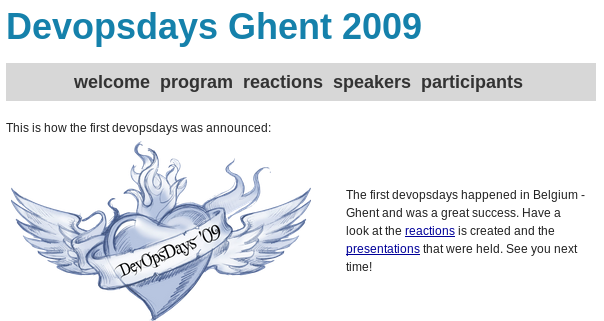
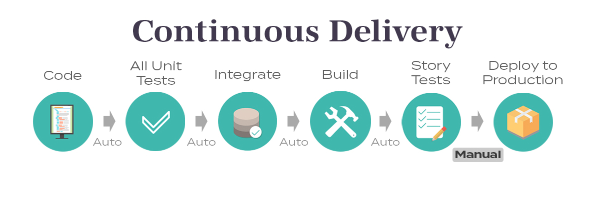
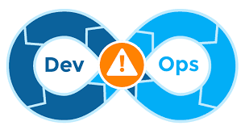
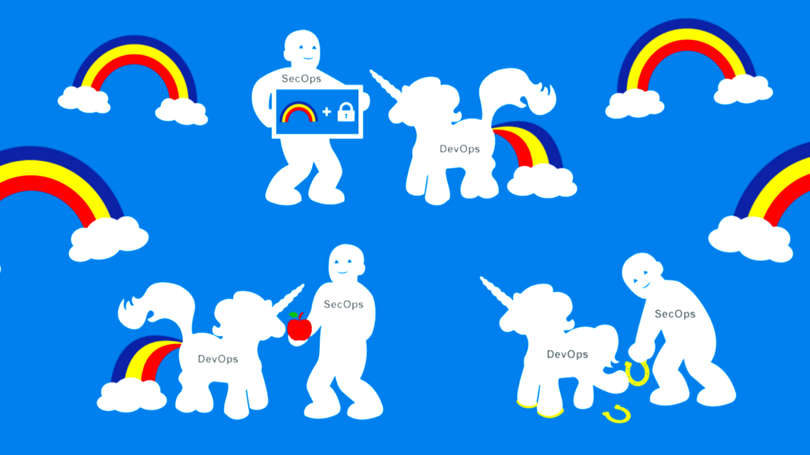

El parche de DevOps
echo "Dickson Armijos R."
echo "Member of Technical Staff ioet, Inc."
Historia
Patrick Debois - 20081
Tres niveles que abordar:Nivel técnico(herramientas, habilidades, trabajo iterativo)Proyecto(comunicación con los equipos, llegar a otras empresas)Operaciones(mezclar cosas no planificadas, prioridades de gestión operativa frente a gestión de proyectos)
1. http://www.jedi.be/presentations/agile-infrastructure-agile-2008.pdf
DecOpsDays - Belgica2

2. http://www.jedi.be/presentations/agile-infrastructure-agile-2008.pdf
Temas abordados
Requisitos no funcionales: ¿ayudan las historias de usuario?
Repensar el monitoreo para la nube.
Construyendo Infraestructuras Ágiles con Puppet.
Introduciendo Kanban en operaciones.
Continuous Integration, Pipelines and Deployment.
DevOps
DevOps es un conjunto de prácticas de desarrollo de software que combina el desarrollo de software (Dev) y las operaciones de tecnología de la información (Ops) para acortar el ciclo de vida del desarrollo de sistemas al tiempo que ofrece características, arreglos y actualizaciones frecuentemente en estrecha alineación con los objetivos comerciales.
Principios
Infrastructure as Code

Continuous Delivery
Continuous monitoring and measurement
Learning from failure
Desafíos y limitaciones en DevOps
Estas en la Cloud
- Data breaches
- Weak identity, credential, and access management
- Insecure interfaces and APIs
- System and application vulnerabilities
- Account hijacking
- Malicious insiders
- Advanced Persistent Threats (APTs)
- Data loss
- Advanced Persistent Threats (APTs)
- Abuse and nefarious use of cloud services
- Denial of Service
Microservices
Containers
Sec in DevOps
¿Que termino usar?
OWASAP
En general, es mucho menos costoso crear software seguro que corregir problemas de seguridad después de que se haya completado el paquete de software, sin mencionar los costos que pueden estar asociados con una violación de seguridad.
Prácticas de codificación segura de OWASP
Etapas
Por su naturaleza, DevOps y el software como servicio (SaaS) son procesos circulares de planificación, desarrollo y operación.
Planning Stage
- ¿Qué datos estamos recopilando?
- ¿Cómo protegeremos los datos contra ataques internos y externos?
- ¿Cuál es la postura de seguridad del entorno en el que agregamos nuestras nuevas funciones?
- ¿Qué hemos aprendido de nuestro despliegue anterior?
- ¿Cuáles son algunos de los desafíos de seguridad encontrados?
Development Stage
Operations Stage
Demo
https://git.io/Je9Aj | Inject Sec To DevOps